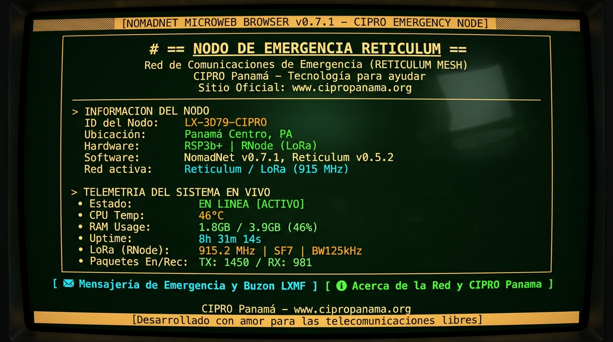

Despliegue automático de nodos repetidores, enrutadores de malla y buzones de mensajería táctica (Store & Forward) en microcomputadoras de bajo costo (Raspberry Pi, Orange Pi, MangoPi).
curl -sSL https://raw.githubusercontent.com/cipropanama/Node-reticulum/main/install.sh | sudo bash
Cuando ocurren desastres naturales o emergencias severas (inundaciones, huracanes, sismos, caídas del tendido eléctrico), las redes celulares y el acceso a Internet convencional colapsan con rapidez. En ese momento crítico, la comunicación salva vidas.
Este proyecto es desarrollado por Cipropanama.org para que cualquier voluntario, grupo de rescate o radioaficionado pueda convertir una computadora de placa reducida (SBC) de $15 a $35 USD en un punto de enlace y mensajería 100% autónomo y cifrado de punta a punta.
Un instalador universal que detecta la arquitectura de tu placa (ARMv6, ARMv7, ARM64, RISC-V) y configura todo sin complicaciones técnicas.
Si envías un mensaje a una persona con su radio apagada o fuera de rango, el nodo lo almacena y se lo entrega automáticamente apenas regrese a la red.
Publica una página Microweb en la red con el nombre del nodo, estado de salud (CPU, RAM, temperatura) y avisos de auxilio comunitarios.
Supervisión continua para despliegues en torres y cerros: limpia la memoria si se satura y reinicia preventivamente si detecta un cuelgue del hardware.
Permite a brigadistas en el terreno enviar mensajes de prueba y recibir confirmación automática con hora, alcance y telemetría.
Mide el voltaje de la batería LiFePO4 / 12V mediante sensores I2C (INA219) para supervisar el nivel de energía a distancia.
Reduce hasta un 30% del consumo del microcomputador apagando puertos HDMI, LEDs y chips no utilizados.
Muestra un código QR en consola para conectar y vincular teléfonos móviles con la app Sideband en 1 segundo.
El nodo opera como un punto de infraestructura abierta: retransmite paquetes de otros usuarios para agrandar la malla y almacena de forma segura los mensajes en diferido:

Vista de la página del Nodo de Emergencia visualizada desde el navegador Microweb de NomadNet.
En Reticulum, todos los paquetes y mensajes viajan fuertemente encriptados desde el origen. El nodo almacena y retransmite los paquetes sin tener acceso al contenido de tus mensajes ni a tus claves privadas.
El sistema está optimizado para consumir muy poca energía (1W a 3W), permitiendo que funcione durante días conectado a una batería pequeña de 12V con panel solar:
| Componente | Modelos Recomendados | Notas de Uso |
|---|---|---|
| SBC (Placa) | Raspberry Pi Zero W / 2W, Orange Pi Zero, MangoPi MQ-Pro | Bajo costo, mínimo consumo, soporte ARM y RISC-V. |
| Radio LoRa (RNode) | LilyGO T-Beam, T-Echo, Heltec LoRa32 v3, SX1262 / SX1276 DIY | Conexión directa por cable USB o pines UART GPIO. |
| Módem Analógico | TNC KISS por USB / Serie | Para enlazar con radios VHF/UHF de radioaficionados. |
| Alimentación | Fuente 5V 2A / Batería LiFePO4 12V con conversor Step-Down | Garantiza estabilidad durante transmisiones LoRa continuas. |
CIPRO impulsa un conjunto de herramientas libres y complementarias sobre Reticulum para crear redes de comunicación de emergencia robustas:
Auto-instalador y gestor de nodos repetidores y mensajería de emergencia para SBCs con Store & Forward y NomadNet.
Pasarela táctica de correo electrónico sobre Reticulum con salida a Internet (SMTP/IMAP) y cliente gráfico integrado.
Pasarela y transporte de telemetría y datos de sensores IoT a través de la red de malla Reticulum.
Integración y puente de tramas APRS para radioaficionados sobre enlaces y paquetes Reticulum.
Este proyecto está liberado bajo la licencia MIT. Su uso es totalmente libre para fines experimentales, respuesta a emergencias y proyectos comunitarios solidarios.
Si este desarrollo te ha sido útil, te invitamos a mantener el reconocimiento y el enlace hacia el proyecto original.
🌐 Sitio Web: www.cipropanama.org
✉️ Correo Electrónico: info@cipropanama.org
🐙 GitHub: github.com/cipropanama